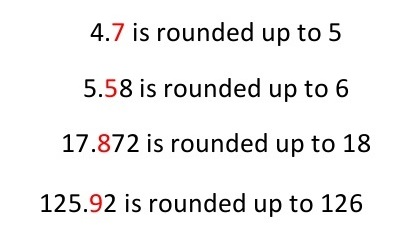
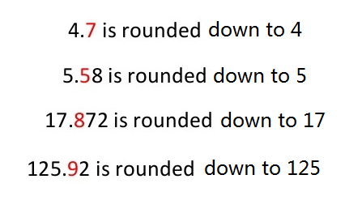
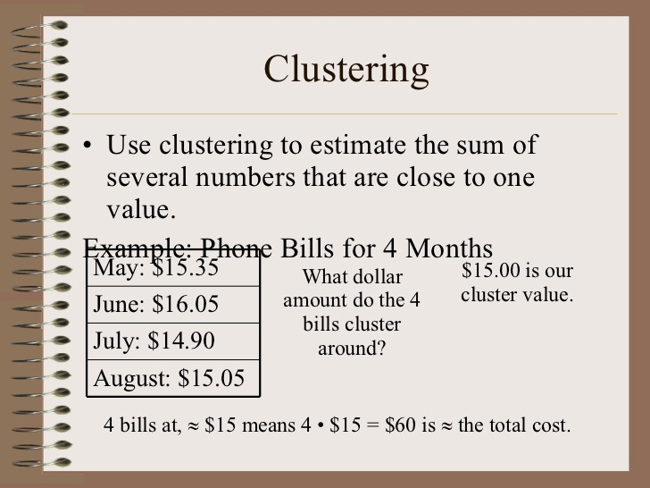
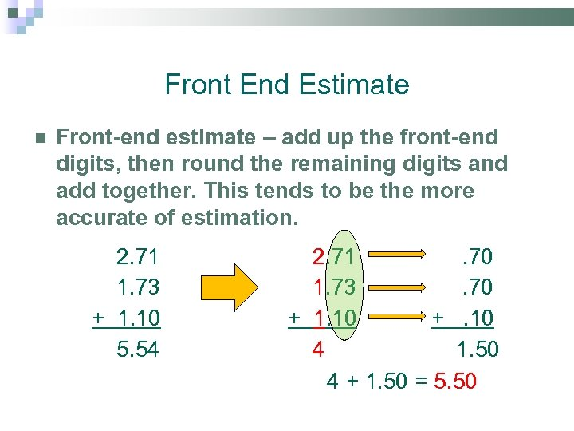
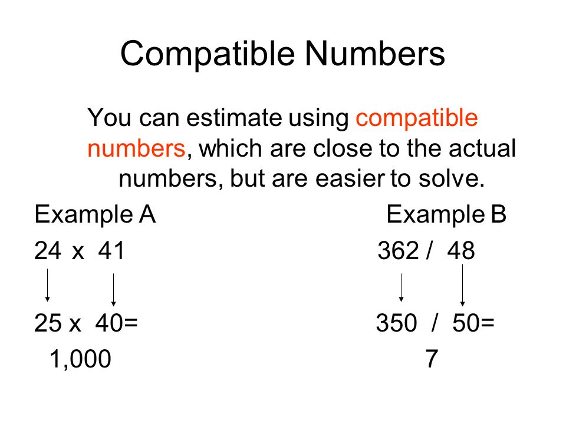

Estimation
Estimation (or estimating) is the process of finding an estimate, or approximation, which is a value that is usable for some purpose even if input data may be incomplete, uncertain, or unstable.
Estimation Methods
- Rounding Up

- Rounding Down

- Clustering

- Front End Estimation

- Compatible Numbers
